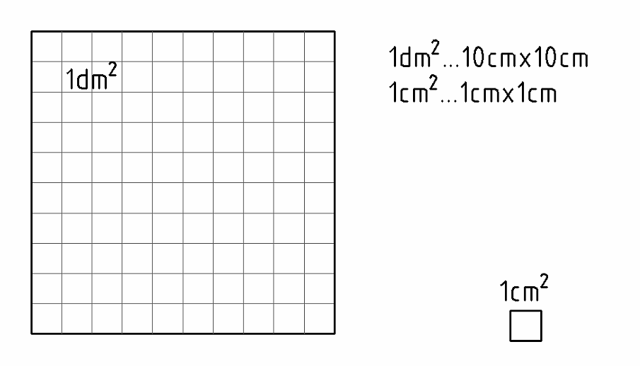

1 Flächen umrechnen
Öffnet YouTube. Braucht Internet.
Diese Woche hat viel Rechnen. Mach pro Tag 1–2 Blätter.
Zuerst die Pflicht-Aufgaben (★ leicht, ★★ mittel). Die Extra-Aufgaben (★★★) am Ende sind freiwillig.
Tippe in die Kästchen. Dann tippe auf „Prüfen“.
Grün = richtig, Rot = schau noch einmal.
Anwendung: Oberflächen, Rohre, Raumflächen
Einheiten: Quadratmeter (m²), Quadratdezimeter (dm²), Quadratzentimeter (cm²), Quadratmillimeter (mm²)
Beim Rechteck ist die Fläche Länge mal Breite (z. B. cm · cm = cm²). Darum steht bei der Einheit ein kleines ² („hoch 2“).

1 dm² ist ein Quadrat mit 10 cm × 10 cm. Da passen 10 · 10 = 100 Quadrate mit 1 cm² hinein.
Die Flächen-Treppe
Umrechnungszahl: 100
m² → dm² → cm² → mm²
Eine Stufe nach rechts (kleinere Einheit): · 100
Eine Stufe nach links (größere Einheit): : 100
1 m² = 100 dm² 1 dm² = 100 cm² 1 cm² = 100 mm²
1 mm² = 0,01 cm² 1 cm² = 0,01 dm² 1 dm² = 0,01 m²
Bei · 100 rutscht der Beistrich um zwei Stellen nach rechts, bei : 100 um zwei Stellen nach links. Schreib große Zahlen ohne Punkt (z. B. 62000).
Aufgabe 1 ★
Rechne in die anderen Einheiten um. Rechne Zeile für Zeile weiter: von der Zeile darüber eine Stufe.
| 0,062 m² | |
|---|---|
| = | dm² |
| = | cm² |
| = | mm² |
| 8300 mm² | |
|---|---|
| = | cm² |
| = | dm² |
| = | m² |
| 1,2 dm² | |
|---|---|
| = | m² |
| = | cm² |
| = | mm² |
Aufgabe 2 ★
Rechne um. Hier ist es immer nur eine Stufe.
| 54 m² = | dm² |
| 34 cm² = | mm² |
| 120 dm² = | m² |
| 13 m² = | dm² |
| 4,6 mm² = | cm² |
| 13540 mm² = | cm² |
Extra: Wenn du noch Zeit hast ★★★
Pflicht geschafft! Du darfst hier aufhören.
Diese Aufgaben sind freiwillig. Hier musst du oft über mehrere Stufen umrechnen.
Neu: km² (Quadratkilometer, für sehr große Flächen)
km² → m² → dm² → cm² → mm²
km² → m² ist · 1 000 000, m² → km² ist : 1 000 000.
Aufgabe 3 ★★★
Zuerst alles in cm² umrechnen. Dann zusammenzählen.
Merke: 100 mm² = 1 cm² und 1 dm² = 100 cm². Beispiel: 5 cm² + 200 mm² = 5 cm² + 2 cm² = 7 cm²
148 cm² + 1432 mm² + 0,25 dm² =
cm²
Aufgabe 4 ★★★
Rechne in die anderen Einheiten um.
| 304 cm² | |
|---|---|
| = | m² |
| = | dm² |
| = | mm² |
| 780 mm² | |
|---|---|
| = | cm² |
| = | dm² |
| = | m² |
| 34 cm² | |
|---|---|
| = | m² |
| = | dm² |
| = | mm² |
| 56 dm² | |
|---|---|
| = | m² |
| = | cm² |
| = | mm² |
Aufgabe 5 ★★★
Rechne um. Achtung: mehrere Stufen und km²!
| 8400 m² | |
|---|---|
| = | dm² |
| = | km² |
| 4308 mm² = | dm² |
| 8504 dm² = | m² |
| 38,4 mm² = | dm² |
| 1870 m² = | km² |
Aufgabe 6 ★★★
Zuerst alles in dieselbe Einheit umrechnen. Dann zusammenzählen.
0,00018 km² + 5400 dm² + 304 m² =
m²
714 mm² + 32 dm² + 21 cm² =
m²
250 dm² + 3728 cm² + 73241 mm² =
m²